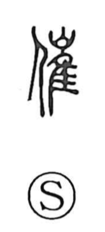

催

Uncategorized
Kun: moyoosu | On: sai
to hold a meeting ・ to sponsor ・ to urge
Explanation
A phono-semantic character with 崔 as its phonetic, giving the on-reading sai. 崔, as seen in the word 崔嵬 meaning “high and steep,” evokes the image of a lofty, precipitous mountain that seems to exert a compelling force on people. Characters built with 崔 often carry this sense of strong pressure or forceful advance—compare 摧, “to smash.” In 催, that impetus becomes social and active: to set things in motion, convene and sponsor gatherings, and press or urge others to act.